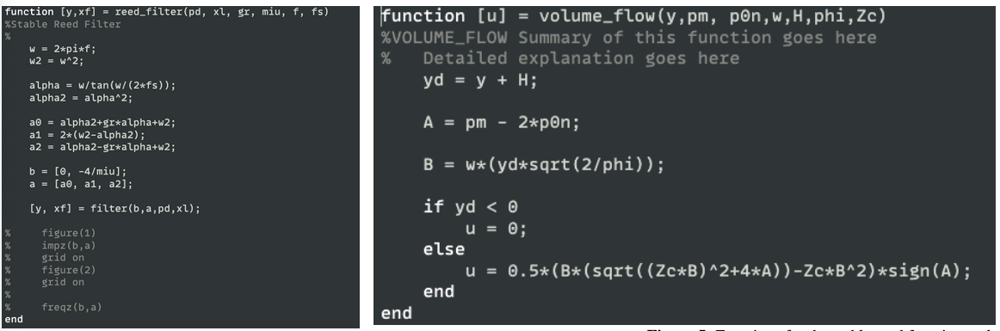
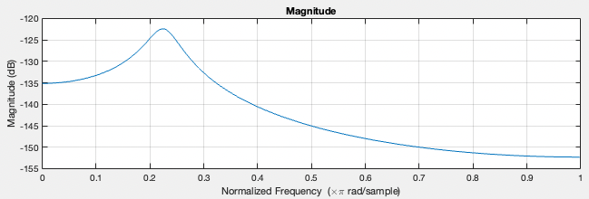
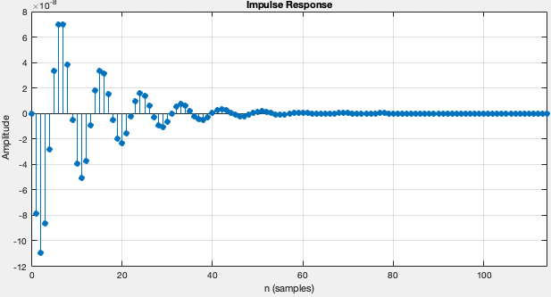
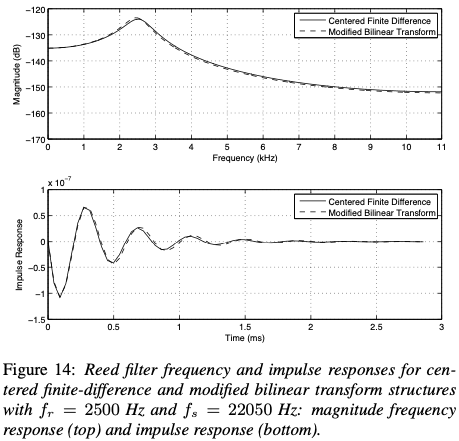
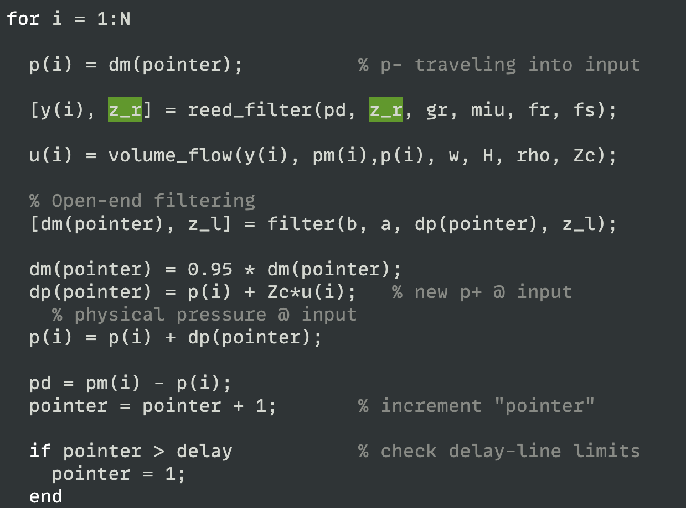

Next: Results and Discussion Up: Main Previous: Introduction
As the cylindrical model has already been implement in one of the classes assignments, I will first focus on implementing the reed model.
It is mainly comprised of two parts, the stable reed filter, and the volume flow equation both discussed in the intro.

Within the main loop
The reed filter will take the pressure difference ($p\Delta$) that was has calculated one sample before. Since the filter will only receive one sample at a time I employ $z_f$ and $z_l$ to save the filters values (more specifically the position of the reed). These are concidered the filters initial and final conditions. Let's say we have a filter:
We are not saving the values of $y\lbrack n - 1\rbrack$ and $y\lbrack n - 2\rbrack$ at the output. $Z_l$ and $Z_f$ will instead do that for you, where $z_l$ is used as the input and $z_f$ is it resulting output.
To find out that the constantes of the filter were correct, I ploted their graph out anc compared to values found in Gary's paper []
 

As we can see the values do coincide which yield to believe the reed filter is properly modeled.
Once we have determiend y, we can pass it into the volume flow function. This will also take the mouth pressure that we had determined in the intro and the incoming pressure value from down the cylindrical tube p-. If y + H < 0 then the reed opening is set to be closed and the volume flow is set to 0. Otherwise we compute the explicit solution mentioned in the intro.
Now that we have computed the volume flow we can scale it by $Z_c$ and pass it into the cylindrical model.

To implement the cylindrical Model, I simply used two delay lines that are looped through whose length is determined by the invers ratio between the frequency being played and the sampling frequency. There is only one pointer that keeps track of the position through the bore but that also wraps around when reaching the end of the delay lines. The length of the bore is represented with the note that is to be played and the area is set to 0.008 meters as that is the value used to determine numerically the reflection function values that are used here from another assignment. The characteristic impedance is determined with $Z_{c} = \frac{\rho c}{\pi r^{2}}$.
Putting both sections together the basic model is as such:
The resulting pressure is determined by the incoming and outgoing pressure at the input:
It is important to be aware of the order in which values are saved and written to in delay lines. Here is the basic algorithm of the model:
Save the incoming pressure value $p^{-}$,
Compute the reed's position using $p\Delta$ that was computed one cycle before
Compute the resulting volume flow from the reed using the mouth pressure $p_{m}$, the incoming pressure $p^{-}$ and the previously computed position $y$,
Compute the input into the incoming delay line using the output of the outgoing delay line
Compute and insert the value into the outgoing delay line
Compute the resulting pressure $p_{0}$
Compute the new $p\Delta$
Procedures [2,3] and 4 can be inversed with no consequences as they are not dependent on each other.

As we see here, we must extract the outgoing values of each delay line first before inserting the new values into them as they occupy the same position respectively. As such, order is important. There are also creative ways to avoid using temporary variables. In this case, when saving $p^{-}$ I store it in $p_{0}$ as it's value will not be updated until step 6. And to avoid having to compute step 5 twice as that same value is used in step 6 in $p_{0},$ we can simply reuse the value from step 5.

|
|
| Made by Maxwell Gentili-Morin. |